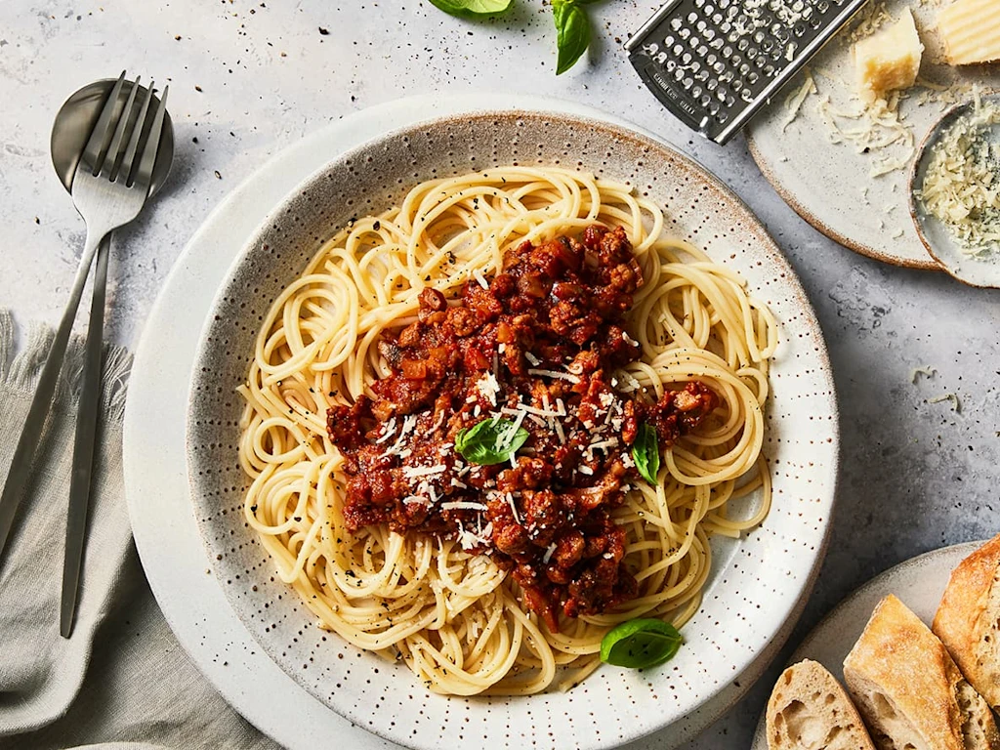

Spaghetti Recipe
This is a simple spaghetti recipe! with common ingredients, dicently quick to prepare and serve to mutiple people!.

Ingredients
- 400g spaghetti
- 2 tablespoons olive oil
- 1 onion, chopped
- 2 garlic cloves, minced
- 500g ground beef
- 1 can (400g) chopped tomatoes
- 2 tablespoons tomato paste
- Salt and pepper to taste
- 1 teaspoon dried oregano
- Grated Parmesan cheese
Directions
- Boil water in a large pot, add a pinch of salt, and cook the noodles according to package instructions. Then Drain and set aside.
- Heat olive oil in a pan over medium heat and add chopped onion and garlic; sauté until soft.
- Add ground beef and cook until browned.
- Stir in chopped tomatoes, tomato paste, oregano, salt, and pepper. Simmer for 15–20 minutes.
- Serve the sauce over cooked spaghetti and top with Parmesan cheese.
Nutrition Facts
| Nutrient |
Amount |
| Calories |
550 |
| Protein |
26g |
| Carbohydrates |
58g |
| Fat |
20g |
| Fiber |
4g |
| Sodium |
400mg |